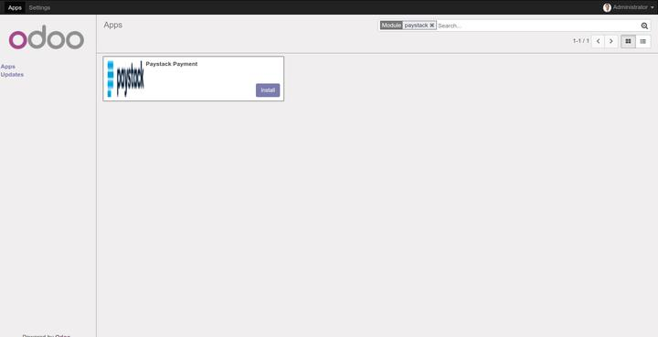
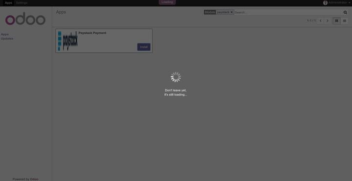
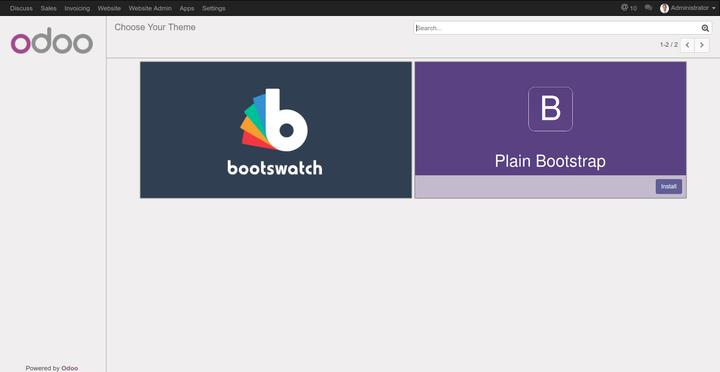
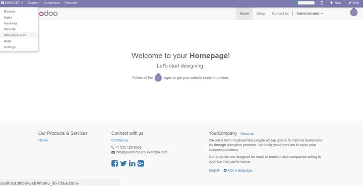
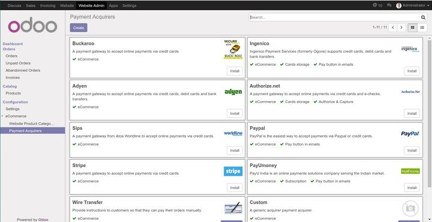
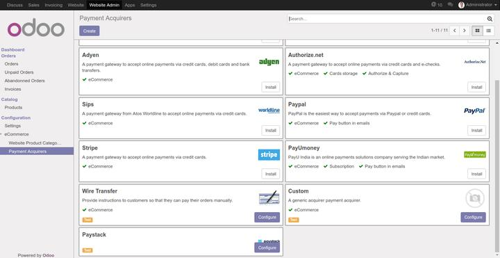
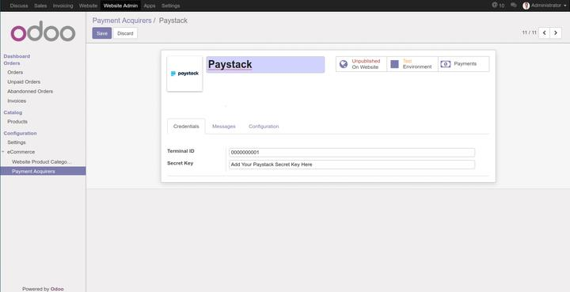
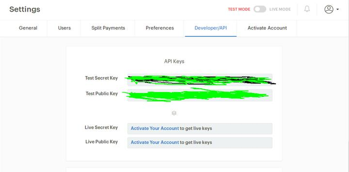
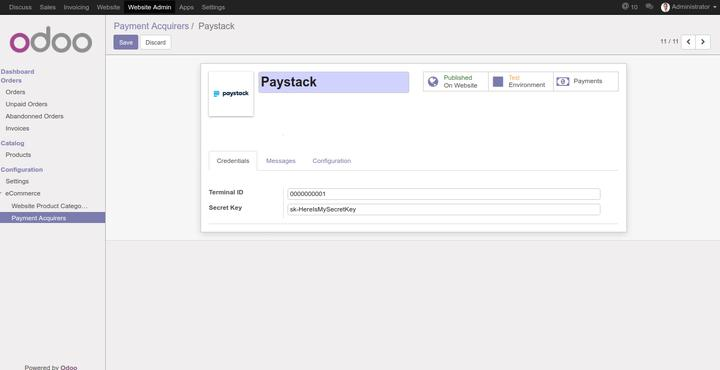

The Following are guidelines to configure Paystack:
Paystack is a payments platform that makes the online payments process seamless for both the consumers and the businesses they are trying to pay. Paystack make easy for merchants to accept credit and debit card payments online from customers.
After Purchase of odoo_paystack module..Navigate to the Apps list and search for Paystack.
Click on Install button and go take a cup of coffee while it installs. After some minutes you select between Bootstrap and Bootswatch
 After selection , your website is successfully set up.
For you to be able to use paystack well, you need to do some configurations and I will walk you through right now...
1. Navigate to the Website and select Website Admin
2) Below the Configuration Menu, you will see ecommerce, click on the menu and you will see a drop down, click on the Payment Acquirers menu, you will see lists of Acquirers, scroll down and click on Paystack
 3) Once you click on Paystack, you need to make the payment acquirer visible in your shop my clicking on the button Unpublished on Website which will change to Published On Website
4) You need to connect your shop with the acquirer. This can only be done by having an account with Paystack (www.paystack.com). Create your account, verify your account with the email sent to you and login. Once you login navigate to Settings and select the Developer/API Tab, copy the Secret Key either Live or Test key and Paste the key on the Secret Key field on your odoo configuration.
Make sure no white spaces.  5) Save and you are ready to use.
If you need any help or want more additional features,
you may contact us through:
Email: contact@mattobell.com
Website: www.mattobell.com
Skype: mattobell